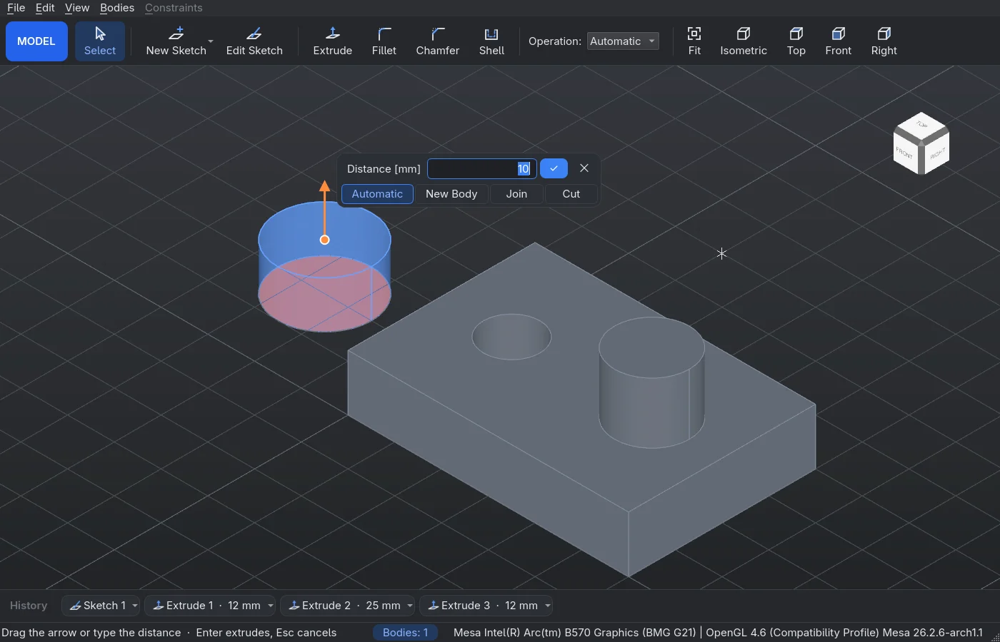
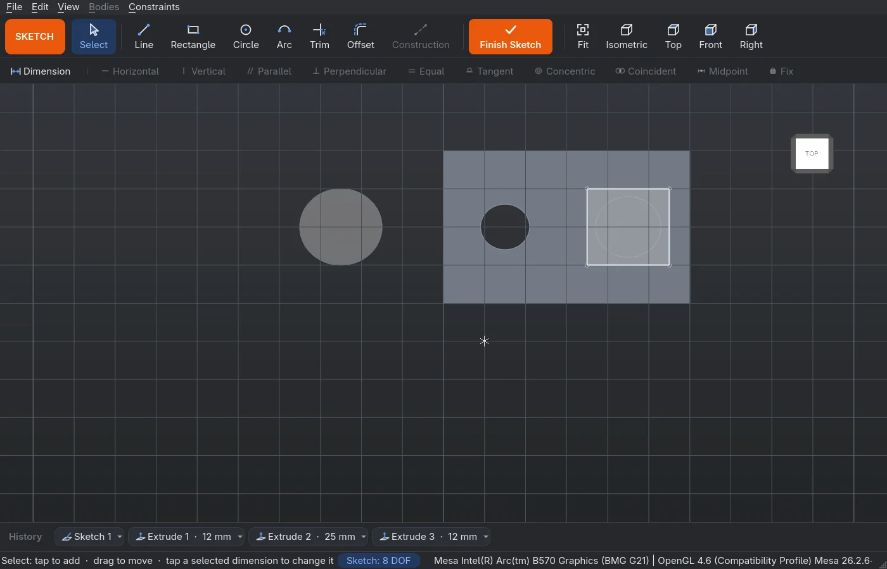
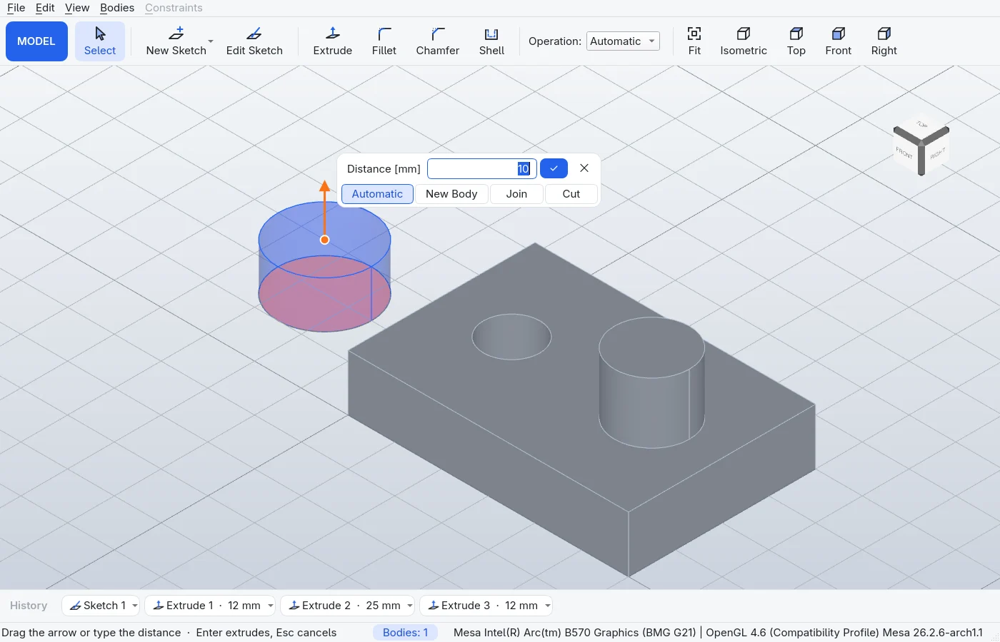
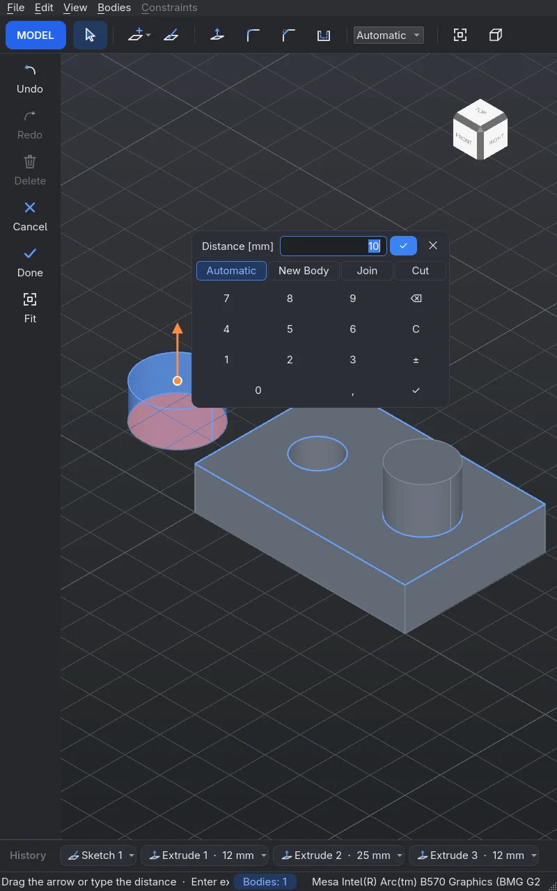

CAD you draw
with a pen.
CAD, który rysujesz
rysikiem.
Sketch with a stylus, constrain and dimension, then push and pull sketches into solids. A native Linux app built on Qt 6 and OpenCASCADE, made for pen tablets like the Framework 12.
Szkicuj rysikiem, nadawaj więzy i wymiary, a potem wyciągaj szkice w bryły. Natywna aplikacja na Linuksa oparta na Qt 6 i OpenCASCADE, stworzona z myślą o tabletach z rysikiem, takich jak Framework 12.

Everything from sketch to solid
Wszystko od szkicu do bryły
Two modes keep it simple: Sketch to draw and constrain, Model to turn closed regions into bodies.
Dwa tryby: Szkic do rysowania i więzów, Bryła do zamieniania zamkniętych obszarów w bryły.
Sketch with a pen
Szkic rysikiem
Lines, rectangles, circles, arcs, offset and Fusion-style trim. Tap-tap or drag, with snapping that leaves constraints behind.
Linie, prostokąty, okręgi, łuki, odsunięcie i przycinanie jak we Fusionie. Tap-tap albo przeciągnięcie, a przyciąganie zostawia więzy.
Constraints & dimensions
Więzy i wymiary
Horizontal, parallel, tangent, coincident and more, plus lengths, gaps, angles and diameters. Press D and tap. Fully defined geometry turns green.
Poziomo, równoległe, styczne, wspólny punkt i więcej, do tego długości, odstępy, kąty i średnice. Wciśnij D i dotknij. W pełni określona geometria robi się zielona.
Push & pull
Wyciąganie
Drag the arrow or type a value with a live preview. Automatic mode joins, cuts or makes a new body, and you can always pick yourself.
Przeciągnij strzałkę albo wpisz wartość, z podglądem na żywo. Tryb automatyczny dodaje, odejmuje albo tworzy nową bryłę, a zawsze możesz wybrać sam.
Fillet, chamfer, shell
Zaokrąglenie, faza, skorupa
Tap edges or faces, drag the handle into the material. Sketch on any flat face, with its edges projected as references.
Dotknij krawędzi albo ścian i przeciągnij uchwyt w głąb. Szkicuj na każdej płaskiej ścianie, a jej krawędzie trafią do szkicu jako odniesienie.
Parametric history
Historia parametryczna
Every operation is on the timeline. Double-tap to reopen a sketch or change a value, and the model rebuilds after it.
Każda operacja jest na osi historii. Stuknij dwa razy, by otworzyć szkic albo zmienić wartość, a model przeliczy się sam.
Projects & export
Projekty i eksport
Readable JSON .shapr projects with the whole history. Export bodies to STEP for CAD or STL for 3D printing.
Czytelne projekty JSON .shapr z całą historią. Eksport brył do STEP dla CAD albo STL do druku 3D.
Made for tablets
Stworzony dla tabletów
Palm rejection, the pen's eraser trims, a tablet mode with big buttons and a keypad, and a layout that follows screen rotation.
Odrzucanie dłoni, gumka rysika przycina, tryb tabletu z dużymi przyciskami i klawiaturą numeryczną, a układ podąża za obrotem ekranu.
Light, dark, two languages
Jasny, ciemny, dwa języki
Follows the desktop's light or dark mode. English and Polish, switched on the fly.
Podąża za jasnym lub ciemnym trybem pulpitu. Polski i angielski, przełączane bez restartu.
A part in four steps
Część w czterech krokach
Every step works with a pen, a finger or a mouse, and with keyboard shortcuts.
Każdy krok działa rysikiem, palcem albo myszą, a także ze skrótów klawiszowych.
New sketch K
Nowy szkic K
On the ground or on a body's face. The view turns to face it.
Na podłożu albo na ścianie bryły. Widok obraca się na wprost niego.
Draw & dimension
Rysuj i wymiaruj
L R C A to draw, D to dimension, constraints from the second bar.
L R C A rysują, D wymiaruje, więzy na drugim pasku.
Finish Ctrl+Enter
Zamknij Ctrl+Enter
Closed areas become regions you can tap.
Zamknięte obszary stają się regionami, które można dotknąć.
Extrude W
Wyciągnij W
Pull the arrow, type a value, Enter. Round it off with G.
Pociągnij strzałkę, wpisz wartość, Enter. Zaokrąglij przez G.
Screenshots
Zrzuty ekranu
Straight from the app, no mockups.
Prosto z aplikacji, bez makiet.



Build it
Zbuduj
No packages yet: build from source. On Arch Linux:
Paczek jeszcze nie ma: zbuduj ze źródeł. Na Arch Linuksie:
# dependencies sudo pacman -S --needed qt6-base qt6-tools opencascade eigen cmake ninja # build and run git clone https://github.com/Vilkasek/shapr3d.git cd shapr3d cmake -S . -B build -G Ninja cmake --build build ./build/shapr_linux # tests ctest --test-dir build
Other distributions work too: you need Qt 6 (Widgets, OpenGL, LinguistTools), OpenCASCADE 7.9, Eigen and CMake. On Wayland the app runs through XWayland, as Arch's OpenCASCADE is built for GLX.
Inne dystrybucje też zadziałają: potrzebne są Qt 6 (Widgets, OpenGL, LinguistTools), OpenCASCADE 7.9, Eigen i CMake. Na Waylandzie aplikacja działa przez XWayland, bo OpenCASCADE z Archa jest zbudowany pod GLX.
Status
Stan prac
Early, but the whole plan is in:
Wczesna wersja, ale cały plan jest zrobiony:
- M0 Qt window, OpenCASCADE view, navigationokno Qt, widok OpenCASCADE, nawigacja
- M1 pen sketching, snappingszkicowanie rysikiem, przyciąganie
- M2 constraints, dimensions, solverwięzy, wymiary, solver
- M3 regions, push/pull, booleansobszary, wyciąganie, operacje logiczne
- M4 parametric history, projects, STEP/STLhistoria parametryczna, projekty, STEP/STL
- M5 sketch on face, fillet, chamfer, shellszkic na ścianie, zaokrąglenie, faza, skorupa
- M6 tablet polish: palm rejection, rotation, tablet modedopracowanie pod tablet: odrzucanie dłoni, obrót, tryb tabletu
- i18n English and Polishpolski i angielski
Getting around
Poruszanie się
The view follows whatever you hold.
Widok reaguje na to, czego używasz.
| Pen | Rysik | the tip draws; with the button held, it orbits; the eraser trims | końcówka rysuje, z przyciskiem obraca widok, gumka przycina |
| Fingers | Palce | one orbits, two pan and pinch-zoom | jeden obraca, dwa przesuwają i przybliżają |
| Mouse & touchpad | Mysz i touchpad | right button or two-finger scroll orbits, middle button or Shift pans, wheel or pinch zooms | prawy przycisk albo przewijanie dwoma palcami obraca, środkowy albo Shift przesuwa, kółko albo szczypanie przybliża |
| 1–6 | top, front, right, back, left, bottom, with Ctrl for corners and Shift for edges, all animated | góra, przód, prawo, tył, lewo, dół; z Ctrl narożniki, z Shift krawędzie, wszystko z animacją | |
| F | fit the view | dopasuj widok |